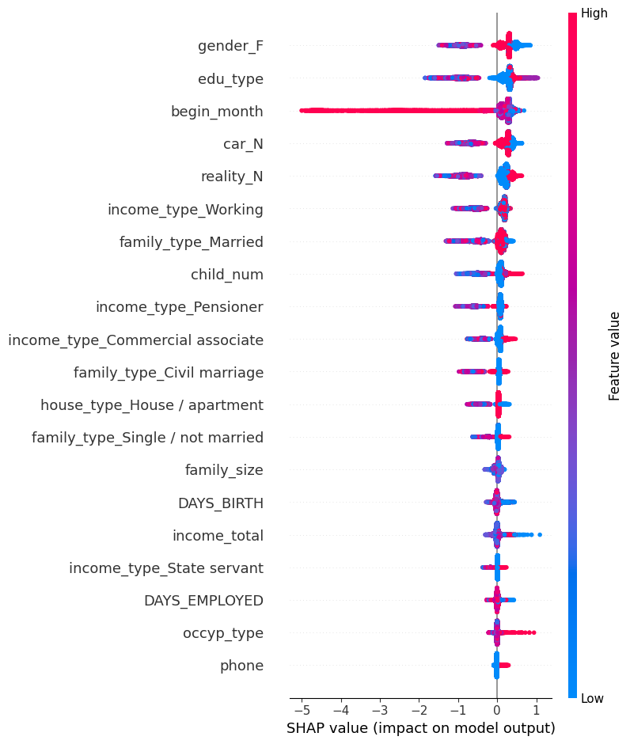

from pkb_sqlite3 import DB_sqlite3
from sklearn.model_selection import train_test_split
import pandas as pd
db_controller = DB_sqlite3('Dacon_creditcard_overdue.db')
df_train = db_controller.search_db_show_df('SELECT * FROM train')
df_train_pre = db_controller.search_db_show_df('SELECT * FROM train_pre')
df_test = db_controller.search_db_show_df('SELECT * FROM test_pre')
df_sample_submission = db_controller.search_db_show_df('SELECT * FROM sample_submission')
train = pd.concat([df_train_pre, df_train['credit']], axis=1)
x_test = df_test.copy()
# index컬럼 삭제
train = train.drop(columns=['index'])
x_test = x_test.drop(columns=['index'])
x_train, x_validate = train_test_split(train, test_size=0.3, random_state=42, stratify=train['credit'])금융권 데이터를 활용한 분석 스터디 - 5주차
개요
- 아래의 목적/이유로 참가한 스터디에 대한 기록
- SQLD취득 후 장기 미사용 & GPT를 통한 SQL사용 등으로 많이 잊은 SQL을 복기
- 기존에 사용해 본 Optuna가 아닌 Autogluon이 커리큘럼에 있어 익혀보고자 함
- 기존에 관심있던 XAI(설명가능한 AI)를 익히고자 함
- 5주차 과제 진행
- 지난 과제의 모델에 대해 SHAP로 Feature importance구하기
- Feature Selection 후 재학습해보기
- 재학습한 모델에 대해 SHAP 시각화 & 변수 설명해보기
5주차 과제
과제 설명
- 과제 : 월간 데이콘 신용카드 사용자 연체 예측 AI 경진대회
- https://dacon.io/competitions/official/235713/overview/description
- 아래 내용 진행해보기
- 지난 과제에서 학습시켜 본 모델에 대해, SHAP를 통해 FI구하기
- Feature Selection 후 재학습해보기
- 재학습한 모델에 대해 SHAP의 다양한 시각화 적용 & 변수의 설명력 구해보기
전처리 해둔 데이터 읽고 데이터셋 나누기
SHAP로 Feature Importance 구하기
- SHAP를 위한 모델 학습
from imblearn.over_sampling import ADASYN
from lightgbm import LGBMClassifier, early_stopping
from sklearn.metrics import classification_report, accuracy_score, confusion_matrix, log_loss
import shap
def model_practice_with_LGBMClassifier(X_train, y_train, X_validate, y_validate):
model = LGBMClassifier(class_weight="balanced", random_state=42)
model.fit(X_train,
y_train,
eval_set=[(X_validate, y_validate)],
eval_metric='logloss',callbacks=[early_stopping(stopping_rounds=10)],
)
y_pred = model.predict(X_validate)
y_proba = model.predict_proba(X_validate)
accuracy = accuracy_score(y_validate, y_pred)
logloss = log_loss(y_validate, y_proba)
cf_matrix = confusion_matrix(y_validate, y_pred)
classify_report = classification_report(y_validate, y_pred)
result_dict = {'model':model,
'y_pred':y_pred,
'y_proba':y_proba,
'accuracy':accuracy,
'logloss':logloss,
'cf_matrix':cf_matrix,
'classify_report':classify_report
}
return result_dict
# 오버샘플링
ADASYN_sampler = ADASYN(random_state=42)
X_train, y_train = ADASYN_sampler.fit_resample(x_train.drop(['credit'], axis = 1), x_train["credit"])
X_validate, y_validate = ADASYN_sampler.fit_resample(x_validate.drop(['credit'], axis = 1), x_validate["credit"])
# 모델학습
result_default = model_practice_with_LGBMClassifier(X_train, y_train, X_validate, y_validate)[LightGBM] [Warning] Found whitespace in feature_names, replace with underlines
[LightGBM] [Info] Auto-choosing row-wise multi-threading, the overhead of testing was 0.001646 seconds.
You can set `force_row_wise=true` to remove the overhead.
And if memory is not enough, you can set `force_col_wise=true`.
[LightGBM] [Info] Total Bins 7336
[LightGBM] [Info] Number of data points in the train set: 35665, number of used features: 33
[LightGBM] [Warning] Found whitespace in feature_names, replace with underlines
[LightGBM] [Info] Start training from score -1.098612
[LightGBM] [Info] Start training from score -1.098612
[LightGBM] [Info] Start training from score -1.098612
Training until validation scores don't improve for 10 rounds
Did not meet early stopping. Best iteration is:
[95] valid_0's multi_logloss: 0.749591- SHAP Feature Importance : SHAP 절대값의 평균
- 각 feature에 대해 절대값의 평균을 구함
- axis 설명
- axis 0 : row (각 샘플)
- axis 1 : feature
- axis 2 : class (출력값, 위 모델에서의 credit)
np.mean(np.abs(shap_values_train), axis=(0, 2))- row와 class를 따라 계산해, feature importance를 계산
import numpy as np
# Explainer를 활용한 SHAP 계산
explainer = shap.TreeExplainer(result_default['model'])
shap_values_train = explainer.shap_values(X_train)
# 전체 SHAP값의 절대값의 평균으로 Feature Importance 구하기
shap_values_mean = np.mean(np.abs(shap_values_train), axis=(0, 2)) # (35,) 크기
print(f"""SHAP value의 Shape : {shap_values_train.shape}
SHAP Feature Importance의 Shape : {shap_values_mean.shape}""")SHAP value의 Shape : (35665, 35, 3)
SHAP Feature Importance의 Shape : (35,)- 데이터프레임 & 오름차순 표기
import pandas as pd
feature_importance = pd.DataFrame({
'Feature': [f'{X_train.columns[i]}' for i in range(shap_values_mean.shape[0])],
'Importance': shap_values_mean
}).sort_values(by='Importance', ascending=False)
feature_importance| Feature | Importance | |
|---|---|---|
| 34 | begin_month | 0.208791 |
| 12 | income_type_Working | 0.182263 |
| 2 | gender_F | 0.169896 |
| 0 | edu_type | 0.160190 |
| 4 | car_N | 0.154671 |
| 6 | reality_N | 0.153865 |
| 14 | family_type_Married | 0.110945 |
| 25 | child_num | 0.083134 |
| 8 | income_type_Commercial associate | 0.074013 |
| 9 | income_type_Pensioner | 0.069626 |
| 27 | DAYS_BIRTH | 0.060860 |
| 26 | income_total | 0.043608 |
| 13 | family_type_Civil marriage | 0.039357 |
| 24 | index | 0.038752 |
| 28 | DAYS_EMPLOYED | 0.034525 |
| 33 | family_size | 0.033940 |
| 19 | house_type_House / apartment | 0.033131 |
| 16 | family_type_Single / not married | 0.028371 |
| 1 | occyp_type | 0.023017 |
| 10 | income_type_State servant | 0.014559 |
| 3 | gender_M | 0.013786 |
| 31 | phone | 0.011512 |
| 5 | car_Y | 0.011273 |
| 32 | 0.010337 | |
| 7 | reality_Y | 0.010111 |
| 15 | family_type_Separated | 0.010072 |
| 17 | family_type_Widow | 0.006757 |
| 22 | house_type_Rented apartment | 0.006367 |
| 20 | house_type_Municipal apartment | 0.004178 |
| 30 | work_phone | 0.003070 |
| 23 | house_type_With parents | 0.003047 |
| 21 | house_type_Office apartment | 0.001704 |
| 18 | house_type_Co-op apartment | 0.000524 |
| 11 | income_type_Student | 0.000000 |
| 29 | FLAG_MOBIL | 0.000000 |
Feature Selection 후 재학습
# 0보다 큰 Feature Select
list_selected_feature = feature_importance[feature_importance['Importance']>0]['Feature'].tolist()
# Feature Selection 적용한 데이터셋
X_train_filtered = X_train.loc[:, list_selected_feature]
X_validate_filtered = X_validate.loc[:, list_selected_feature]
# 모델학습
result_feature_selected = model_practice_with_LGBMClassifier(X_train_filtered, y_train, X_validate_filtered, y_validate)[LightGBM] [Warning] Found whitespace in feature_names, replace with underlines
[LightGBM] [Info] Auto-choosing row-wise multi-threading, the overhead of testing was 0.001743 seconds.
You can set `force_row_wise=true` to remove the overhead.
And if memory is not enough, you can set `force_col_wise=true`.
[LightGBM] [Info] Total Bins 7336
[LightGBM] [Info] Number of data points in the train set: 35665, number of used features: 33
[LightGBM] [Warning] Found whitespace in feature_names, replace with underlines
[LightGBM] [Info] Start training from score -1.098612
[LightGBM] [Info] Start training from score -1.098612
[LightGBM] [Info] Start training from score -1.098612
Training until validation scores don't improve for 10 rounds
Did not meet early stopping. Best iteration is:
[95] valid_0's multi_logloss: 0.749591재학습한 모델에 대해 SHAP의 다양한 시각화 적용 & 변수의 설명력 구해보기
- 재학습한 모델에 대한 SHAP계산
import numpy as np
# Explainer를 활용한 SHAP 계산
explainer_featured = shap.TreeExplainer(result_feature_selected['model'])
shap_values_train_featured = explainer_featured.shap_values(X_train_filtered)
# 전체 SHAP값의 절대값의 평균으로 Feature Importance 구하기
shap_values_mean_featured = np.mean(np.abs(shap_values_train_featured), axis=(0, 2)) # (35,) 크기
print(f"""SHAP value의 Shape : {shap_values_train_featured.shape}
SHAP Feature Importance의 Shape : {shap_values_mean_featured.shape}""")SHAP value의 Shape : (35665, 33, 3)
SHAP Feature Importance의 Shape : (33,)SHAP Summary plot
- Class 0 : 신용도가 높음
- 일해서 돈을 버는 사람일수록(income_type_Working높음) / 증가
- 결혼하지 않은 사람일수록(family_type_Married) / 증가
- 신용카드 발급이 오래된 사람일수록(begin_month) / 증가
- 데이터수집일을 기준으로 0부터 역으로 센 음수변수(값이 작을수록 오래됨)
- income_total…?
shap.summary_plot(shap_values_train_featured[:, :, 0],
X_train_filtered,
feature_names=X_train_filtered.columns,)- Class 2 : 신용도가 낮음
- 신용카드 발급이 오래된 사람일수록(begin_month) / 증가
- 데이터수집일을 기준으로 0부터 역으로 센 음수변수(값이 작을수록 오래됨)
- 신용카드 발급이 오래된 사람일수록(begin_month) / 증가
shap.summary_plot(shap_values_train_featured[:, :, 2],
X_train_filtered,
feature_names=X_train_filtered.columns,)
SHAP Feature Importance plot
- Class 0 : 신용도가 높음
- income_type_Working / 영향력이 큼
shap.summary_plot(shap_values_train_featured[:, :, 0],
X_train_filtered,
plot_type='bar')- Class 2 : 신용도가 낮음
- 성별, 교육수준, 신용카드 발급기간, 자동차 및 부동산 소유 여부의 영향력 큼
shap.summary_plot(shap_values_train_featured[:, :, 2],
X_train_filtered,
plot_type='bar')SHAP Depenence plot
- Feature importance에서 특정 경향이 강했던 변수 위주의 확인(Class 0 : 신용도가 높음)
- income_type_Working : 전 구간에서 양의 영향을 끼침
import matplotlib.pyplot as plt
fig, ax = plt.subplots(1, 1, figsize=(10,7))
shap.dependence_plot("income_type_Working",
shap_values_train_featured[:, :, 0],
X_train_filtered,
interaction_index=None, ax=ax)- Feature importance에서 특정 경향이 강했던 변수 위주의 확인(Class 2 : 신용도가 낮음)
- gender_F : 전 구간에서 음의 영향을 끼침
import matplotlib.pyplot as plt
fig, ax = plt.subplots(1, 1, figsize=(10,7))
shap.dependence_plot("gender_F",
shap_values_train_featured[:, :, 2],
X_train_filtered,
interaction_index=None, ax=ax)- edu_type : 1을 임계점으로하여, 낮은 경우 양의 영향 / 높은 경우 음의 영향
fig, ax = plt.subplots(1, 1, figsize=(10,7))
shap.dependence_plot("edu_type",
shap_values_train_featured[:, :, 2],
X_train_filtered,
interaction_index=None, ax=ax)- begin_month : 약 1.2를 임계점으로하며, 이보다 높은 경우 음의 영향
fig, ax = plt.subplots(1, 1, figsize=(10,7))
shap.dependence_plot("begin_month",
shap_values_train_featured[:, :, 2],
X_train_filtered,
interaction_index=None, ax=ax)SHAP Force plot
- 샘플로 1가지만 실습
- 0번(사람)에 대해, 모델이 예측값을 산출할 때
- income_type_Working이 음의 영향을 줌(0일수록 높은 신용도)
- 컬럼에 index가 있던 것을 발견함. 데이터 전처리로직에서 index컬럼삭제해도록 반영해 둠
- 0번(사람)에 대해, 모델이 예측값을 산출할 때
class_label = 0 # credit 0, 1, 2 중 택1
row_number = 0 # 확인해보고 싶은 데이터 row
shap.force_plot(explainer_featured.expected_value[class_label],
shap_values_train_featured[row_number, :, class_label],
X_train_filtered.iloc[row_number, :],
matplotlib=True)
Copyright © 2024 Kibok Park All rights reserved.